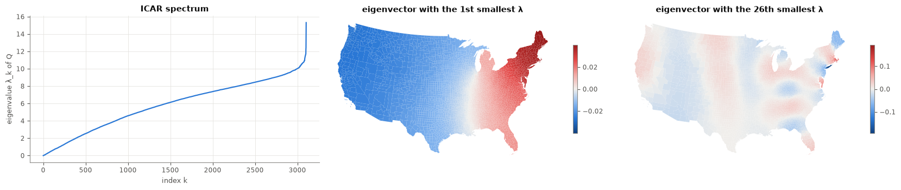
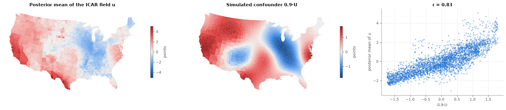

This notebook places a prior on the unmeasured spatial surface and reads the program effect from the posterior, including \(P(\text{effect}<0\mid\text{data})\). The Gaussian model uses Scenario A with spillovers. The count model uses Scenario D, premature-death counts.
The models are an intrinsic CAR, a BYM, a collapsed Gibbs sampler, and a Poisson BYM for counts. The classes are BayesianSpatialCausal in geolattice.spatial_analysis.spatialcausal and BYM in geolattice.spatial_statistics.bayes.
Bayesian hierarchical models handle areal data naturally: a spatial random effect absorbs smooth unexplained variation, and the posterior gives full uncertainty for every quantity, including direct, spillover and total effects and the probability that an effect is beneficial.
Installation. This notebook needs installation option 3 (core, spatial analysis and spatial statistics): pip install "geolattice[statistics]". See “Installation options” in the GeoLattice README.
Code
import warningswarnings.filterwarnings("ignore")import numpy as np, pandas as pd, matplotlib.pyplot as pltimport geolattice.spatial_analysis.spatialcausal as sc, countycausal as cc, tutorial_style as tsfrom geolattice.spatial_analysis.spatialcausal.bayes import _icar_eigents.use()gA, w, truth = cc.scenario_program()X = gA[cc.COVARIATES].to_numpy()xy = cc.coords_km(gA)data = sc.SpatialCausalData(X, gA["T"], gA["y"], xy, w=w)
Conditional autoregressive priors
A CAR prior specifies each area’s effect given its neighbours. The intrinsic CAR (Besag, 1974) is
with \(A\) the binary adjacency, \(D=\operatorname{diag}(n_i)\) and \(c\) the number of connected components. \(Q\) is singular (\(Q\mathbf 1=0\) on each component), so the prior is improper: it fixes differences between neighbours but not the overall level. The standard fix is a sum-to-zero constraint per component, with the intercept carrying the mean.
BYM (Besag, York & Mollié, 1991) adds unstructured heterogeneity, \(u_i+v_i\) with \(v_i\sim\mathcal N(0,1/\tau_v)\), so the data decide how much variation is spatially structured. For a Gaussian outcome \(v\) is not identifiable separately from the noise, so we use ICAR + noise:
Priors: \(\beta\sim\mathcal N(0,10^2)\) on the standardised outcome scale, flat intercept, and \(\tau_u,\ \sigma^{-2}\sim\text{Gamma}(1,0.01)\).
An exact collapsed sampler in the eigenbasis of \(Q\)
Diagonalise once: \(Q=V\Lambda V^\top\). Keep the \(n-c\) eigenvectors with \(\lambda_k>0\); the sum-to-zero constraint simply removes the null directions. Writing \(\mathbf u=V_+\mathbf c\), the ICAR prior becomes independent normals, \(c_k\sim\mathcal N\big(0,1/(\tau_u\lambda_k)\big)\), and everything becomes cheap:
Variance components, field integrated out. In the eigenbasis the residual \(\mathbf r=\mathbf y-A\boldsymbol\beta\) has independent components, \((V_+^\top\mathbf r)_k\sim\mathcal N\big(0,\ \sigma^2+1/(\tau_u\lambda_k)\big)\), while its part in the null space is \(\mathcal N(0,\sigma^2 I)\). This marginal likelihood is \(O(n)\) to evaluate, so \((\log\sigma^2,\log\tau_u)\) are updated jointly by several random-walk Metropolis steps per iteration. The two variances trade off strongly, and one-at-a-time Gibbs updates mix very slowly.
Coefficients, field integrated out.\(\boldsymbol\beta\mid\sigma^2,\tau_u,\mathbf y\) is Gaussian with precision \(A^\top\Sigma^{-1}A/\ldots\) obtained via a Schur complement in the eigenbasis (only \(p\times p\) matrices). Drawing \(\beta\) without conditioning on \(\mathbf u\) keeps mixing fast even when treatment and the spatial field are correlated, which is the spatial-confounding case.
Field.\(c_k\mid\cdot\sim\mathcal N\!\Big(\frac{(V_+^\top\mathbf r)_k/\sigma^2}{D_k},\ \frac1{D_k}\Big)\) with \(D_k=\tau_u\lambda_k+\sigma^{-2}\).
Because \(\mathbf u\) is drawn last and not used by steps 1-2, this is a valid partially collapsed Gibbs sampler (van Dyk & Park, 2008). The smallest positive eigenvalues belong to the smoothest patterns:
Code
V, lam, n_null = _icar_eigen(w, len(gA))print(f"Q has {n_null} null directions (one per connected component: mainland + 3 islands)")fig, ax = plt.subplots(1, 3, figsize=(17, 3.6))ax[0].plot(np.sort(lam), color=ts.BLUE, lw=1.6)ax[0].set_xlabel("index k"); ax[0].set_ylabel("eigenvalue λ_k of Q"); ax[0].set_title("ICAR spectrum")for a, k inzip(ax[1:], (0, 25)): ts.county_map(gA, V[:, np.argsort(lam)[k]], a, cmap=ts.DIV, center=0, title=f"eigenvector with the {k+1}st smallest λ"if k ==0elsef"eigenvector with the {k+1}th smallest λ")plt.tight_layout()
Q has 4 null directions (one per connected component: mainland + 3 islands)

Fitting the Gaussian ICAR model with spillover
Code
bay = sc.BayesianSpatialCausal(spillover=True, draws=1000, tune=500, chains=2, seed=1).fit(data)print(bay.summary())print(f"Metropolis acceptance (variance components): {bay.acceptance_:.2f}")names = {"tau": "T (direct)", "delta": "W T (spillover)"} | {f"x{j}": c for j, c inenumerate(cc.COVARIATES)}bay.diagnostics_[["mean", "sd", "q_lo", "q_hi", "rhat", "ess"]].rename(index=names).round(3)
Convergence.\(\hat R\) compares between-chain and within-chain variance of split chains; values above 1.05 mean the chains have not mixed. The effective sample size (ESS) is the number of independent draws carrying the same information. The regression coefficients have ESS close to the 2,000 draws. The variance components mix more slowly but adequately.
Interpreting the effects. With heterogeneous \(\tau_i\) the coefficient on \(T\) is a variance-weighted average, like the PLM estimand (−0.907). The spillover coefficient \(\delta\) (truth −0.4) is the effect of moving from no treated neighbours to all treated, and the posterior directly gives \(P(\text{effect}<0\mid\text{data})\).
fig, ax = plt.subplots(1, 3, figsize=(17, 3.8), gridspec_kw={"width_ratios": [1, 1, 0.7]})ts.county_map(gA, bay.field_, ax[0], cmap=ts.DIV, center=0, title="Posterior mean of the ICAR field u", label="points")ts.county_map(gA, 0.9* gA["U"], ax[1], cmap=ts.DIV, center=0, title="Simulated confounder 0.9·U", label="points")ax[2].scatter(0.9* gA["U"], bay.field_, s=4, alpha=0.4, color=ts.BLUE)ax[2].set_xlabel("0.9·U"); ax[2].set_ylabel("posterior mean of u")ax[2].set_title(f"r = {np.corrcoef(bay.field_, gA['U'])[0, 1]:.2f}")plt.tight_layout()

The field captures \(U\)plus the real spatial structure of diabetes that the covariates do not explain, which is why the correlation is high but not 1.
Spatial confounding in Bayesian models
A spatial random effect is not automatically a confounding adjustment (Hodges & Reich, 2010; Khan & Calder, 2022). The posterior of \(\tau\) depends on how the prior apportions shared spatial variation between \(T\) and \(\mathbf u\). Bayesian spatial+ first residualises treatment (and its spatial lag) on the leading Moran eigenvectors, as in notebook 01.
Without a spatial effect both coefficients are badly confounded: the spillover even has the wrong sign. The ICAR field removes most of the bias here, because the confounder is smooth on the scale the field represents, and spatial+ moves both estimates a little closer to the truth. The direct effect’s intervals narrowly miss −0.907. That value is the overlap-weighted target, weighting each county’s effect by \(e_i(1-e_i)\), whereas a regression coefficient weights heterogeneous effects by residual treatment variance given everything else in the model, which is close but not identical. In other settings (penalised fields competing with a smooth treatment) the two can diverge, so it is good practice to fit both.
Counts: Poisson BYM for premature deaths
For count outcomes, \(O_i\sim\text{Poisson}(E_i\,\theta_i)\) with expected counts \(E_i\) (population × a reference rate) and
Effects are log rate ratios: \(e^{\tau}\) is the multiplicative change in the premature-death rate. This model runs through geolattice.spatial_statistics.bayes.BYM (built-in Gibbs/Metropolis sampler; PyMC NUTS with backend="pymc"). Scenario D simulates counts from the real CHR premature-death ratios with a program effect \(\tau=-0.10\) (rate ratio 0.905) and spillover \(\delta=-0.06\). The built-in sampler updates one area at a time and mixes slowly with many covariates, so we use five states (449 counties), three covariates and long, thinned chains.
The direct effect is recovered as a rate ratio of about 0.89 with a tight interval. The spillover is poorly identified in 449 counties (wide interval around a small value). The relative-risk map is smoothed toward neighbours, most where expected counts are small. The ESS for the coefficients is modest even with 6,000 iterations per chain: check max_rhat and min_ess, and switch to backend="pymc" for serious count analyses.
Summary and Conclusions
ICAR priors encode “neighbours are similar”. Their impropriety is handled by a sum-to-zero constraint, which in the eigenbasis of \(Q=D-A\) amounts to dropping the null directions.
Collapsing the field out of the coefficient and variance updates gives fast, exact mixing for Gaussian outcomes.
A spatial random effect may or may not remove spatial confounding; compare with spatial+.
Posterior draws give interpretable statements such as “P(effect < 0)”, but only after convergence is checked.
Resources
Papers
Reference
Notes
Besag (1974)
Intrinsic CAR prior
Besag, York & Mollié (1991)
BYM: ICAR plus unstructured heterogeneity
van Dyk & Park (2008)
Partially collapsed Gibbs sampling
Hodges & Reich (2010); Khan & Calder (2022)
A spatial random effect is not automatically a confounding adjustment
In this library
Object
Role
BayesianSpatialCausal
Gaussian ICAR with an optional spillover term; collapsed Gibbs sampler
geolattice.spatial_statistics.bayes.BYM
Poisson BYM for counts (backend="pymc" for NUTS)
Bayesian spatial+
Residualise treatment on leading Moran eigenvectors before the ICAR fit